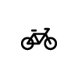
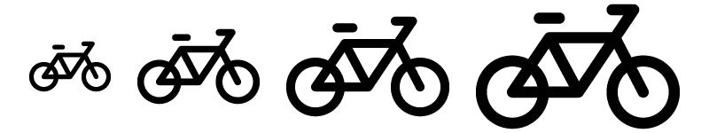

Licons is a set with 209 icons in line style created in 2014.
Created and maintained by Jan Klever.
Using
Basic icons

<i class="li-bike"></i>Larger icons

<i class="li-bike li-2x"></i>
<i class="li-bike li-3x"></i>
<i class="li-bike li-4x"></i>
<i class="li-bike li-5x"></i>
Fontastic
- This version of the webfont was created by Fontastic.
Portfolio project
License
- Creative Commons;
- Attribution is no longer required as of licons, but much appreciated:
licons by Jan Klever - http://janklever.com.br
Author
- Email: janklever+licons@gmail.com
- Instagram: http://instagram.com/janklever
- Behance: https://be.net/janklever